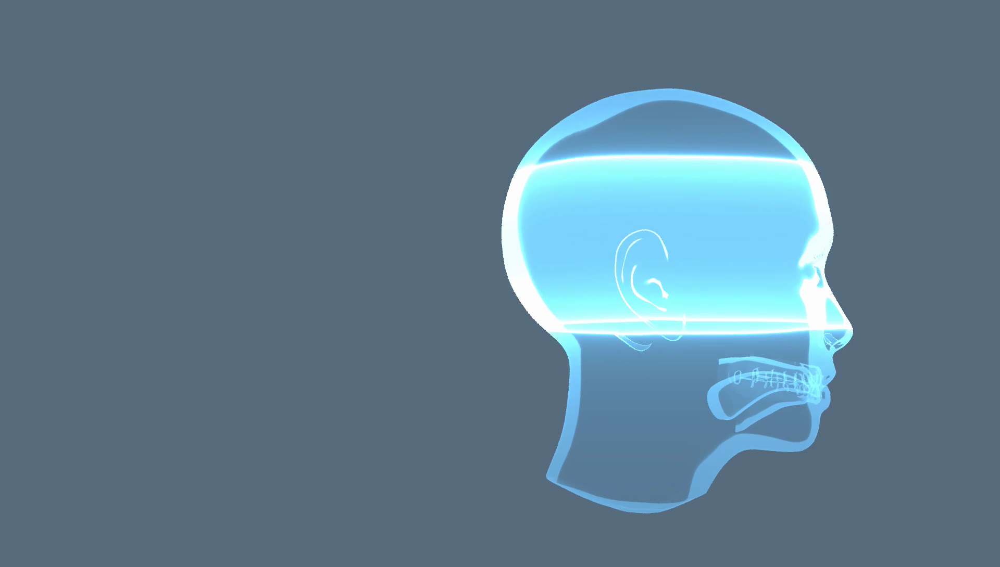

RETURN;
RETURN; est un court-métrage réalisé par Henri Respaud-Bouny, Yoan Lecoq, Mickaël l'Haridon et moi-même.
Plusieurs plans du film présentent des objets CG. Tous les éléments sont entièrement faits avec Blender et son moteur de rendu cycles.
Ci-dessous deux captures d'un des plans CG du film. Le modèle du crâne est importé directement depuis MakeHuman. L'effet "halo" sur le crâne est obtenu en utilisant le graphe de noeuds de cycles (shader combinant les informations de Z et de normale).


Voici le court-métrage entier (le plan présenté précédemment est à 1'45) :